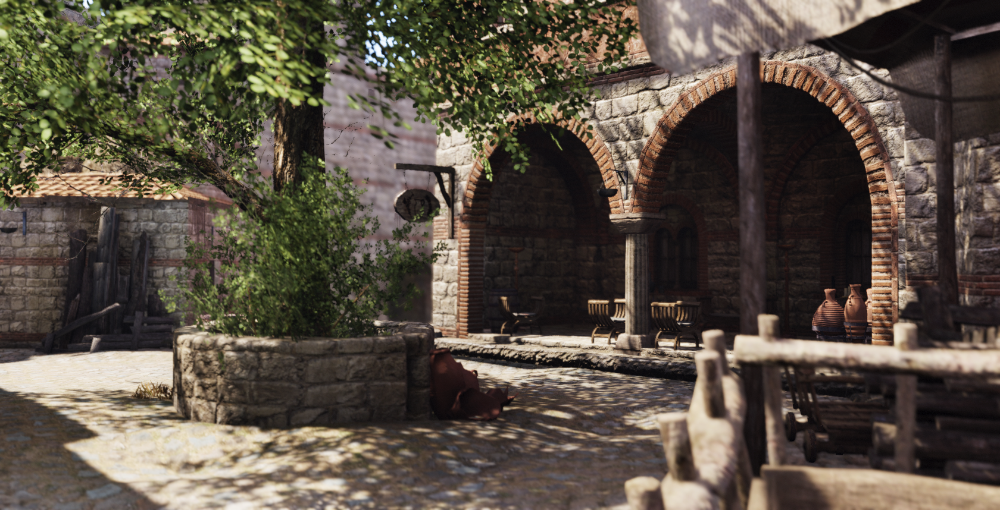
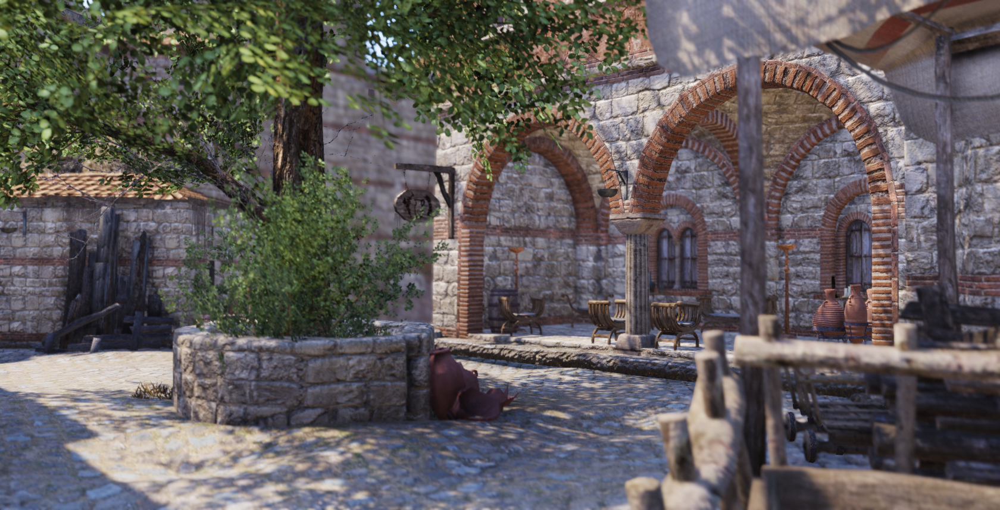
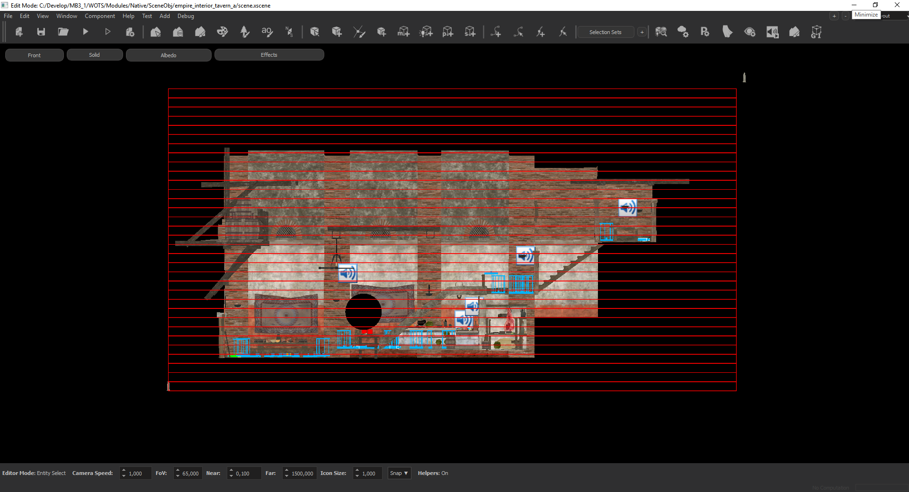
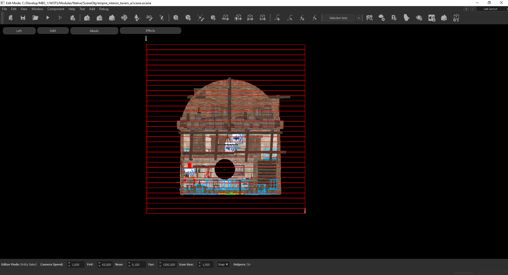
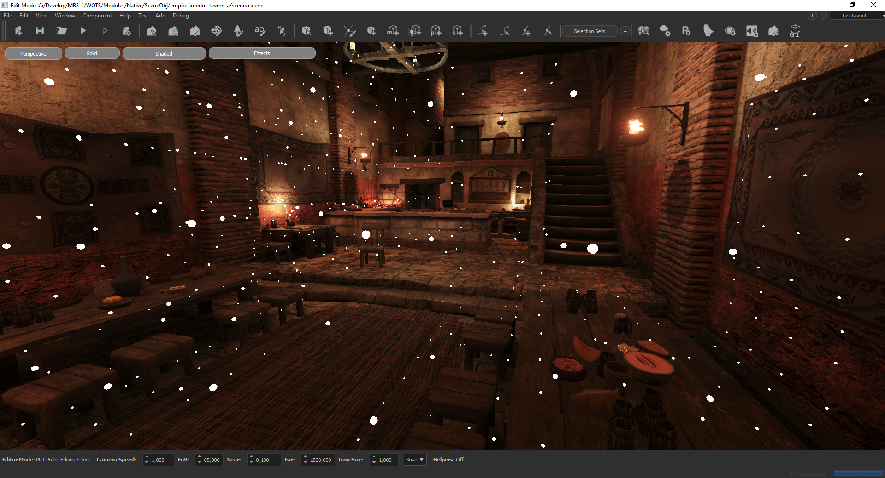
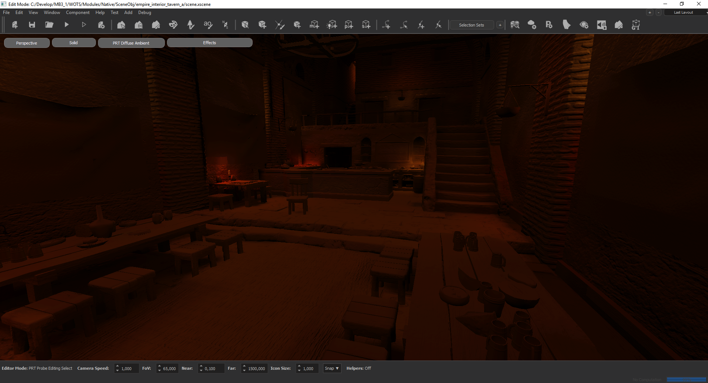
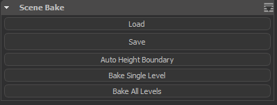
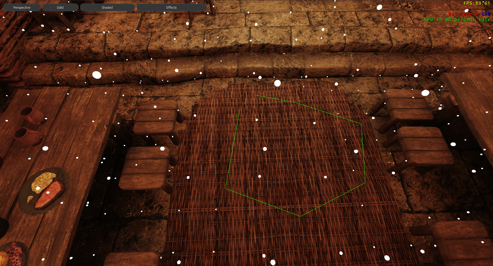

PRECOMPUTED RADIANCE TRANSFER - GI SYSTEM
We introduce a new global illumination system to the engine. It is based on a pre-baked system called “Precomputed Radiance Transfer”. This technique allow us to bake the local ambient in the scene and display it in an optimized manner at runtime. Baked data is independent from the atmospheres. Thus, we can light the scene with the same bake data for every atmosphere.
| WITH | WITHOUT |
|---|---|
|  |  |
Baking Procedure
Scene baking is divided into a couple of parts:
- First, the artist should place the border probes to identify the GI boundaries of the scene.
Side Note 1: If you minimize the GI boundaries as much as possible(not extending it to distant places from navigatable area) , you can decrease the grid dimensions and thus you will have more precision inside the town where it matters the most. For town scenes, we generally use grid dimensions of 1.5 meters width and 2.5 meters height.
Side Note 2: For the pixels outside the GI borders, we use a fallback probe from the scene. The default is the highest active probe near to the left corner of the GI order. Artist can select any other probe from the scene by first selecting probe and checking the “Fallback Probe” checkbox in the UI.


- AT the next pass, the GI probes are created. The initial positions of the probes computed automatically by using the navigation mesh of the scene. With the navigation mesh, we place the probes where the agents can move and also to everywhere visible from those navigation points. The probes are generated within a 3d grid structure. A directional ambient data is computed for every probe position. Using these ambient light values, every pixel in the screen is illuminated by the nearest 8 probes. In some cases, when the lighting between neighbour probes have a very high difference, light or shadow leaking can occur. In order to fix these issues, we render shadowmaps from the probes just like point lights. Probes with shadowmaps are named as “Visibility Probes”. For memory usage issues, there is a limit for these Visibility Probes, which is 2048. At the automatic placement phase, the system also tries to find the most probable leak positions and assign those probes as Visibility Probes. It takes into account the ambient light difference. For additional leak fixes, the system leaves the last 5 percent Visibility Probe limit empty, so that the scene designer can fix the remaining leak issues.


PRT Files
Just like the scene edit data system, prt data is divided into two parts. prt_data.bin is located inside the SceneObj folder and is the compressed version which is stripped of any editing data. This file should be sent to the source control. The other file is the edit data file. It is very big (at around 2 - 3 gb) and automaticaly sent to the edit data folder inside the network. Once you open a pre-baked scene in editor, only the compressed data is loaded. To be able to edit the bake data, you should Load the edit data with the ‘Load’ button in the “General Info” panel of the PrtInspector.
Important Node : After any changes to the prt data, do not forget to save the data with the ‘Save’ button in the “General Info” panel of the PrtInspector.
PRT Operations

- Load : Loads the edit data from the server.
- Save : Saves the current edit data to the server.
- Auto Height Boundary : Adjusts the PRT boundary probes’s height to the min/max of the scene.
- Bake Single Level : Bakes the scene with the current levels, should be used for the interior scenes
- Bake All Levels : Bakes the scene with the pre-defined multiple levels(namely level-1/level-2/level-3 and siege/civilian) combinations.
Probe Placement Parameters:
- Grid Width : Determines the probe grid cell size in XY plane. For towns, you can use 1.5. For interiors scenes, you can use between 0.5 to 1.0.
- Grid Height : Determines the probe grid cell height. For towns, you should use a value near 2.5. For interiors scenes, you can use between 0.5 to 1.0.
Selection Tools:
To ensure fast and smooth editing of probes, various selection tools are implemented.
- Select All : Selects all probes.
- Grow : Grows the selection to include neighbour probes in XY plane.
- Shrink : Shrink the selection to only include the inner neighbour probes in XY plane.
- Fill : Finds the inner probes of the current selected probe group and selectes them.
- Select Border : Finds and selects the border probes of the current selection.
- Select Inner Border : Finds and selects the inner border of the current selection.
- Select Outer Border : Finds and selects the outer border of the current selection.
- Lasso Tool : We implemented a screen space lasso tool for easy selection of a group of probes. It can be started by pressing ‘r’ and finished by either double clik or pressing ‘r’ again.

Visibility Tools
- Show Active Probes : Shows all active probes
- Show Deactive Probes : Show deactived probes.
- Show Visibility Probes : Show the Visibility probes (the ones with the visibility calculation to prevent leaking).
- Level To Show : Selects the Z level to show. -1 means all levels.
- Show Probe Radius : Determines the probe radius for debug visualization.
- Box Tool : Enables a mode where you .
Side Not : This system only renders the nearest 100 probes with respect to the camera.
Useful Shortcuts
- Left Ctrl + x: Enable/Disable the selected probes
- Left Ctrl + c: Toggles the “Visibility Probe” status
- Left Alt + Left Mouse Click: Select the probes that influences a pixel (very neat tool for fixing the leak issue, select the pixel and use the toggle visibility status shortcut to fix the issue)